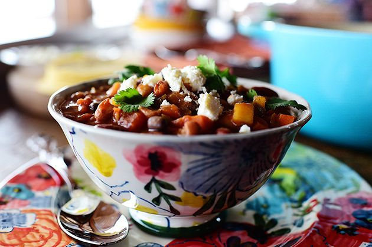

Veggie Chili

Description
Good veggie chili is so darn good that you won’t even notice there’s no meat in it! This pot of goodness is chock full of all the good things in life: veggies, beans, and a lot of spice
Definitely one of my favorite meatless marvels on the planet!
Here’s how to make it, baby.
Ingredients
- 2 tbsp. Olive Oil
- 4 cloves Garlic, Minced
- 1 whole Large Onion, Diced
- 1 whole Red Bell Pepper, Seeded And Diced
- 1 whole Yellow Bell Pepper, Seeded And Diced
- 1 whole Green Bell Pepper, Seeded And Diced
- 2 whole Carrots, Peeled And Diced
- 2 stalks Celery, Diced
- 1 whole Jalapeno, Seeded And Finely Diced
- 3 c. Vegetable Broth (can Sub Chicken Or Beef Broth If You Prefer)
- 1 can (12 To 14 Ounces) Plain Tomato Sauce
- 1 can (10 Ounce) Ro-tel (diced Tomatoes And Chiles)
- 1/2 tsp. Salt, More To Taste
- 1 tsp. Ground Oregano
- 1 tbsp. Ground Cumin
- 2 tbsp. Chili Powder (more To Taste)
- 1 can (14 Ounces) Kidney Beans, Drained And Rinsed
- 1 can (14-ounce) Pinto Beans, Drained And Rinsed
- 1 can Garbanzo Beans, Drained And Rinsed
- 1 can Black Beans, Drained And Rinsed
- 1 whole Large Zucchini (or 2 Medium Zucchini), Diced
- 1/4 c. Masa (corn Flour) Or Regular Cornmeal
- 1/2 c. Warm Water
- Cotija Cheese, For Serving (optional)
- Pico De Gallo, For Serving (optional)
- Cilantro Leaves, For Serving (optional)
Steps
- In a large pot, heat the oil over medium heat. Add the garlic, onion, 3 colors of bell pepper, carrots, celery, and jalapeno, then cook for about 5 minutes, stirring occasionally, until starting to soften. Add the oregano, cumin, chili powder, and salt. Stir and cook for a few more minutes.
- Pour in the broth, tomato sauce, and Ro-tel. Stir, bring to a boil, then reduce the heat to low, cover, and simmer for 30 minutes. Add the beans and zucchini, stir, then cover and simmer for 30 more minutes.
- Mix the masa with the warm water and stir it into the pot. Simmer for 15 more minutes. Taste and adjust seasonings.
- Serve with Cotija cheese, pico de gallo, and cilantro